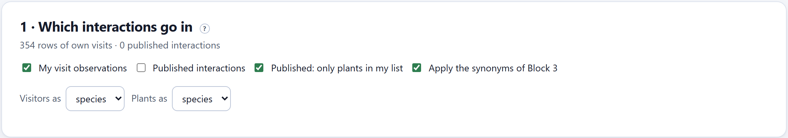
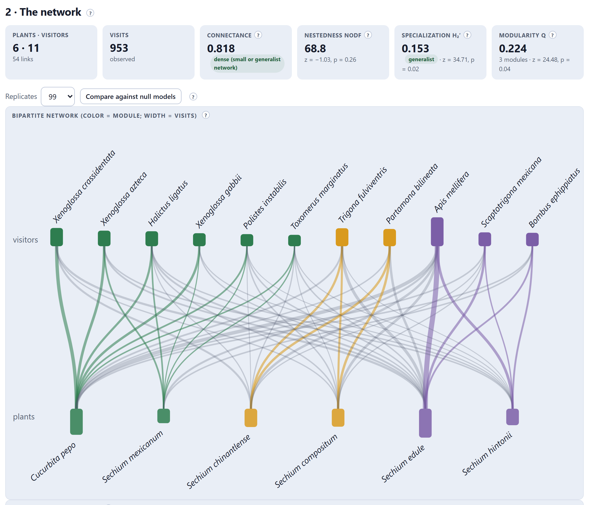
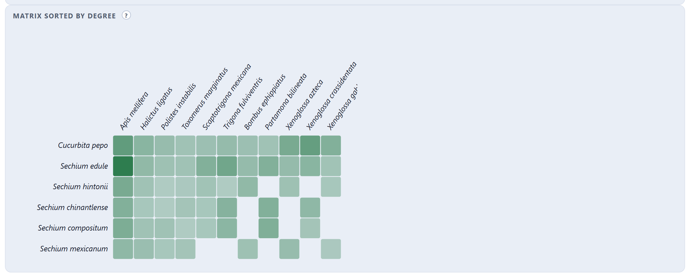
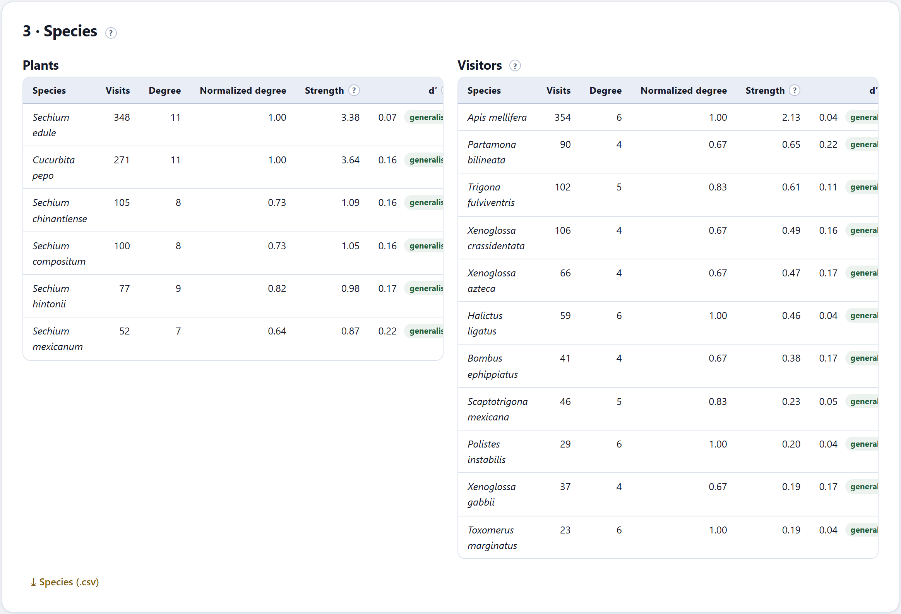
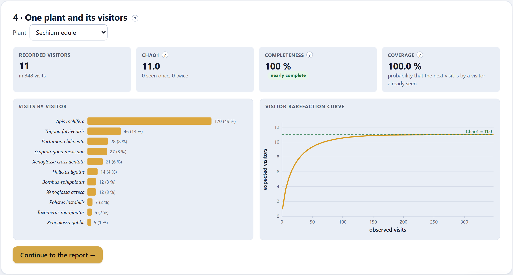

Here we no longer speak of coincidences but of recorded visits: your field observations and what others have published. The plant–visitor network says how specialized the relationship is —connectance, nestedness, specialization and modules, against null models—, which visitors are key for each plant and how many remain to be recorded.
Blocks 5 to 8 measured the opportunity for interaction. This block works with the fourth link of the chain of evidence (Section 1.7): the visit to the flower. A visit network is a matrix of plants (rows) by visitors (columns) with the number of visits observed in each cell, or with a 1 when all that is known is that the link exists.
Pollination networks have a characteristic structure: they are nested —specialists visit subsets of the plants that generalists visit (Bascompte et al. 2003)—, more or less modular —groups of plants and visitors that interact more among themselves— and they have a measurable specialization. Each index is compared with what a random network with the same totals would give: a number without a null model does not say whether the structure is remarkable.

| Control | What it does |
|---|---|
| My visit observations | The visits imported in Block 2, with their counts. |
| Published interactions | The pairs brought from the interaction database; each published record counts as one visit. |
| Published: only plants in my list | Leaves out the published plants that do not belong to an entry of your list (the database also returns the other plants that your visitors visit). |
| Apply the synonyms of Block 3 | Rewrites the names with the synonym rules: Peponapis crassidentata becomes Xenoglossa crassidentata. |
| Visitors as · Plants as | Species or genera. Grouping by genus helps when the sources identify at different levels. |
With your visits only, the network is quantitative: each cell is a comparable number of visits. When you add the published ones, each published record counts 1 and the numbers stop being comparable: the app then computes the structure (connectance, NODF, modules) but not H₂′ or d′, which assume counts, and says so in its tile.

| Index | What it measures | In the practice study |
|---|---|---|
| Connectance | The observed links among the possible ones (Jordano 1987). Large networks usually have between 0.15 and 0.4. | 0.818 · dense (small or generalist network) |
| NODF | Nestedness, from 0 to 100, by overlap and decreasing fill of the binary matrix (Almeida-Neto et al. 2008). | 68.8 · z = −1.03, p = 0.26 |
| H₂′ | The specialization of the whole network, from 0 (each visitor spreads its visits like the supply) to 1 (each one visits exclusive plants) (Blüthgen et al. 2006). | 0.153 · generalist · z = 34.71, p = 0.02 |
| Modularity Q | How divided the network is into groups (Barber 2007), searched for with label propagation and restarts (Liu and Murata 2010; Beckett 2016). | 0.224 · 3 modules · z = 24.48, p = 0.04 |
The null models keep the totals of each plant and each visitor and distribute the links at random: the curveball algorithm for the binary matrix (Strona et al. 2014) and the random allocation of individual visits for the quantitative one (equivalent to that of Patefield 1981). The tile gives z —how many standard deviations the observed value lies from the null mean— and a two-tailed p; the one for modularity uses up to 49 replicates because each one requires searching for modules.
The practice network is small and highly connected (0.818): almost every visitor reaches almost every plant. Its nestedness (68.8) is no different from that of a random network with the same totals (p = 0.26). Its specialization is low in absolute terms (H₂′ = 0.153, generalist), but much higher than that of chance (z = 34.7): the visitors distribute their visits with preferences, albeit weak ones. And it has three modules: the squash bees, with Halictus, Polistes and Toxomerus, together with Cucurbita pepo and S. mexicanum; the stingless bees Trigona and Partamona with S. chinantlense and S. compositum; and the honey bee, Scaptotrigona and the bumblebee with chayote and S. hintonii.

interaction_matrix.csv.| If the network is small (fewer than 10 species per side) | then connectance will be high and nestedness hardly informative; report H₂′, the modules and the sampling completeness before NODF. |
| If an index does not differ from the null model | then the structure it measures is not remarkable given the totals: do not discuss it as a trait of the network. |
| H₂′ < 0.3 · 0.3–0.6 · > 0.6 | generalist · intermediate · specialized. |

| Column | What it says |
|---|---|
| Visits · Degree | How many visits, and with how many species of the other side it interacts. |
| Normalized degree | The degree divided by the number of species of the other side: 1 if it interacts with all of them. |
| Strength | The sum of its partners’ dependences on it (Bascompte et al. 2006): a visitor with high strength is one on which many plants depend for a large fraction of their visits. It is the measure of a “key visitor”. |
| d′ | The specialization of each species with respect to the availability of its partners, from 0 to 1 (Blüthgen et al. 2006): generalist < 0.3, intermediate 0.3–0.6, specialist > 0.6. |
⤓ Species (.csv) downloads both tables as network_species.csv. In the practice network no species exceeds d′ = 0.22; the most specialized are Partamona bilineata and S. mexicanum (0.22).
The last card looks at one plant at a time: who visits it, in what proportion, and whether sampling has already found all its visitors. It works even if the study has a single plant —in that case it is the only possible reading, because with one plant there is no network to describe.

| Tile | What it says |
|---|---|
| Recorded visitors | How many different visitors in how many visits. |
| Chao1 | The estimated minimum number of visitors, from how many were seen once and how many twice (Chao 1987). |
| Completeness | Recorded divided by Chao1: what fraction of the visitors has already been found (Chacoff et al. 2012). Very incomplete < 50%, incomplete 50–80%, good 80–95%, nearly complete > 95%. |
| Coverage | The probability that the next visit is by a visitor already seen. |
| If completeness is below 80% | then visitors remain to be recorded: do not claim that the plant has few visitors or that it depends on one; go back to the field or say so in the discussion. |
| If there are many visitors seen only once | then Chao1 is unstable: it is a minimum of the total, not the total. |
Completeness needs visit counts. With published interactions, all that is known is whether the link exists, and the app says so instead of drawing the curve.
| Message | What it means and what to do |
|---|---|
| Interactions are needed | Import your visit observations or search the published interactions in Block 2. |
| There are no interactions with these sources… | The chosen boxes leave the network empty. Tick another source or remove the filter of plants in the list. |
| With a single plant (or a single visitor) there is no network to describe… | The visitors, their shares and the completeness are shown; the network indices do not apply. |
| Sampling completeness needs visit counts… | There are only published interactions for that plant. |
| H₂′: needs visit counts | The network mixes sources or has only published ones (Section 9.2). |
| no null model yet | Press Compare against null models. |